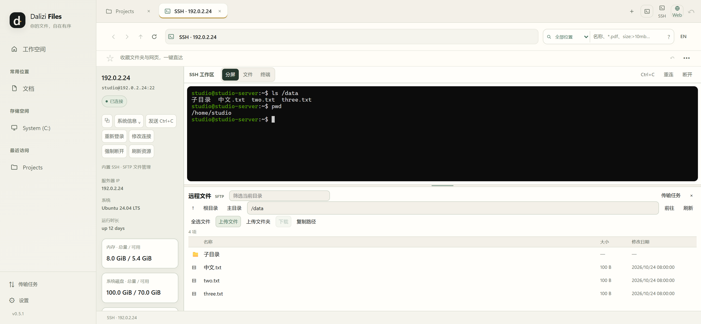
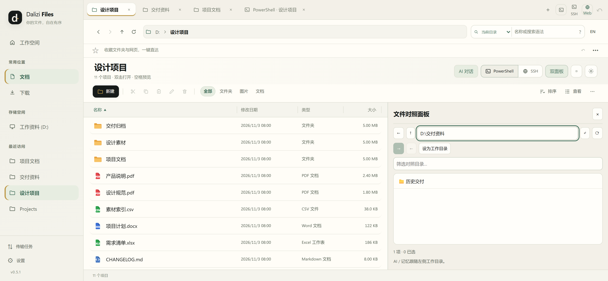
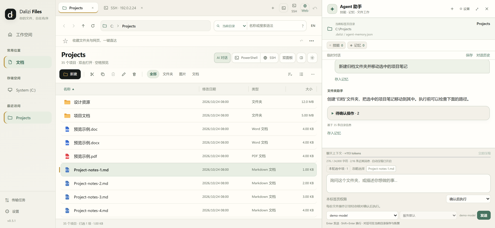

d·
DALIZI FILESSTUDIO EDITION
不止于文件管理
呆梨文件
让工作回到
一个地方。
文件 · 终端 · AI，一窗协作。
独立双面板SSH / SFTP目录级 AI
SSH · 远程工作区− □ ×

呆梨文件 Dalizi Files− □ ×

✦ Agent · 围绕当前目录协作− □ ×

让工作回到
一个地方。
文件 · 终端 · AI，一窗协作。


